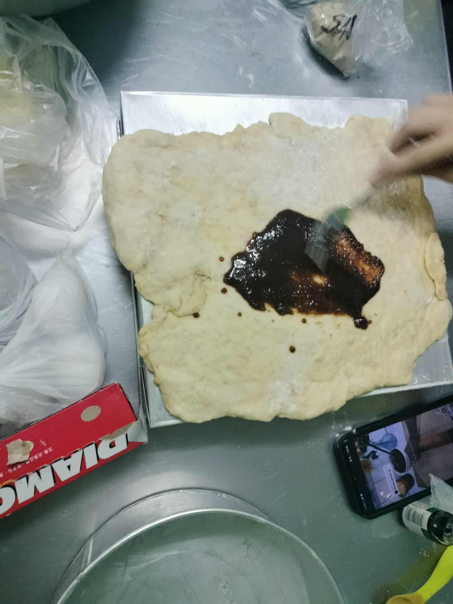

Introduction
This project shows our cinnamon roll baking activity. We prepared the dough, made the cinnamon filling,
rolled and sliced the dough into pieces, and cooked the rolls using a method that did not require an oven.
The photos below show the steps we captured during the activity.
Ingredients
Dough Ingredients
- 2 cups all-purpose flour
- 1/2 cup warm milk
- 1 egg
- 1/4 cup butter
- 1/4 cup sugar
Cinnamon Filling Ingredients
- 2 tablespoons butter, softened
- 3 tablespoons brown sugar
- 1 teaspoon ground cinnamon
Cinnamon Filling
Instructions: Mix the butter, brown sugar, and cinnamon until well combined. This mixture is then spread evenly over the rolled-out dough before slicing and rolling the cinnamon rolls.
Procedure
- The dough was prepared and mixed until smooth, then left to rise covered with plastic wrap.
- Once the dough had risen, it was rolled out evenly and the cinnamon filling was spread across the surface.
- The dough was rolled into a log and sliced into individual rolls.
- The rolls were arranged and prepared for cooking using a covered pot or similar method that did not require an oven.
- They were cooked until ready, showing the transformation from dough to cinnamon rolls.
Photo Gallery
These photos show the steps we captured during the cinnamon roll baking activity,
including making the dough, dough rising, spreading the filling, slicing, rolling,
making the filling, and arranging the rolls before cooking.


Reflection
The activity helped us learn the basic process of making cinnamon rolls and the steps involved in preparing, shaping, and cooking them.
Using a method without an oven showed that baked goods can be prepared in different ways.
Observing the dough rise, spreading the filling, and shaping the rolls was interesting,
even though not all steps were photographed. Overall, it was a useful experience in following a recipe and seeing how ingredients come together.
Tips & Learnings
- Let the dough rise properly before shaping it.
- Spread the filling evenly for better flavor.
- Keep the rolls similar in size for even cooking.
- Handle the dough gently to keep the rolls neat.